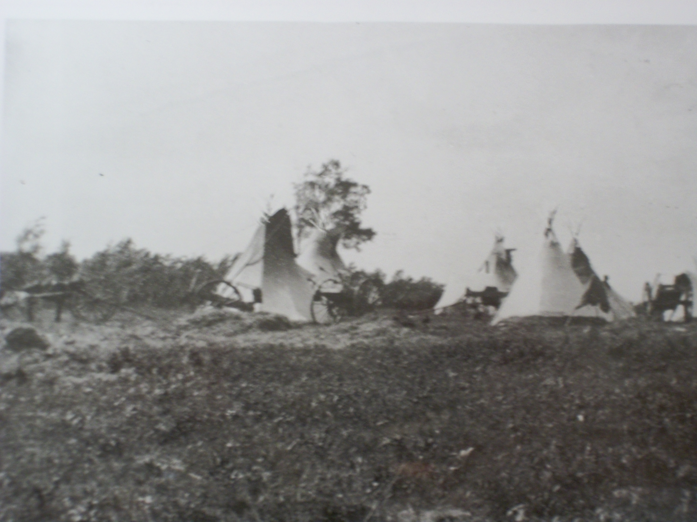

Stories
The following stories are true oral accounts told by First Nations Elders from the Saskatoon Tribal Council area, from the book, “…And they Told Us Their Stories” A book of Indian Stories. The stories are written as they were told relating valuable teachings from the past. Since the stories are written exactly as they were told, some terms may be offensive, however, as the editor relates, “It was felt to delete the controversial terms would not accurately represent the experiences and feelings being shared” (Lobe iv). The stories chosen reflect the importance of the journey of First Nations lives from the Treaty era, to life on the reserve, the residential schools, early customs, effects of the pass and permit system to farming on the reserve.
We gratefully acknowledge the Saskatoon Tribal Council, in their permission and use of these provocative and significant stories in promoting Treaty education to all people.
If you would like to know more information about the Saskatoon Tribal Council, please see their website at: http://www.sktc.sk.ca/
A Typical School Day
By Harold Greyeyes

Saskatchewan Archives Board S-B70
A photograph of the students and staff of the Battlefords Industrial School taken by D. Cadzow
I went to the Lebret Residential school from 1936 to 1944. I graduated from grade eight and took my high school as Duck Lake. I should have gone on to university. I had the chance. One day the priest went to the front of the class and talked to us about the advantage of joining the priesthood. Then he asked those of us who wanted to go on to college and learn how to be priests. Well, neither I or anybody else raised our hands.
Fr. DeBretange was the principle. He was a retired colonel from the French Foreign Legion. His second in command was Mr. Tuck, a retired RCMP sergeant. They were tough but fair. Their discipline was harsh but positive. They taught me many lessons that have stood with me over the years. With these men you always knew where you stood. They ran a full program and we didn’t have time to make trouble. Those few boys who tried were squashed, usually in such a way that all of us could see what happened.
Our school day started at 6:00. We had fifteen minutes to go to the washroom, wash, fold our towel, put the soap away, make the bed and stand at attention beside our beds. At 6:15 we said our prayers, got dressed for breakfast (shirt, tie, and best pants). At 7:00 we went to the chapel for mass and confession and at 7:30 to the playroom for breakfast. The food was good. We had porridge or Sunny Boy cereal with brown sugar or syrup and milk. After breakfast, we changed to our chore clothes, milked the cows or did other chores such as mopping floors or dusting.
Then we had a little bit of playtime, changed back to our classroom clothes and went to classes at 9:00.There we stood as attention beside our desks and sang O Canada. The first class was religion. In this class, we were told that the Indians were savages, that our parents were smart because they had sent us to this school and that we owed our good fortune to God and out country. At 9:30 we worked at the 3 R’s. This lasted till noon with a 15 minute recess at 10:30. Recess was always exactly fifteen minutes.---- no more, no less.
At noon we had a lunch till 12:30 and then organized recreation till 1:30. At 1:30 it was back to the 3 R’s, another recess and school was out at 4 PM. After school we went to different activities. I was involved in music. We had a good school band and marched in a lot of parades. Others did some baking, woodworking, gardening or drama. We used to put on big drama productions. I once played the part of Prince Charming in Snow White because I could sing. After these activities it was time for chores again so we had to change back into our chore clothes. Then we had supper at 6 PM. we had lots of food and it was good.
From 6:30 to 7:30 it was organized recreation again. We had to change into our recreation clothes. From 7:30 to 8:30 it was study time and halls were quiet while we worked at our books. We had to sit at a table. We couldn’t lay down. Then it was prayers and off to bed a 9 PM.
The days were well organized and very full. We never had any time to fool around. This schedule carried on till the day before Christmas. Christmas and Boxing days were holidays. They were free time. We were never allowed to speak Cree or any other native language. Our parents could come and visit us. They had a separate building nearby where they stayed. We went home for July and August and boys over twelve could stay home longer to help with the harvest. When school started in the fall the little kids would cry for a month because they were so homesick. (as told by Jack Funk)
An Indian Story
by Christine Baldhead and George Sutherland
 |
|
A group of Cree people in front of tipis, circa 1905. |
One Arrow stood naked before the commissioners and two thousand people in 1876 and said, “I came to the world naked. I had nothing then. I have nothing now. Before the white man came we had buffalo that supplied us with food, clothing, tents. We had berries. We had the protection of the Great Spirit. You are taking our living from us.”
Times before the treaty were pretty hard for the people of One Arrow and other Indian Bands. The buffalo were gone. The white man attributed this to their zealous and intrusive way of life, their vibrant culture and their marksmanship. Indian legend says the buffalo just disappeared. Whatever the cause, when the primary supply of food for a great number of people is eliminated the impact is immediate and the consequences are starvation, disease, discontent, despair, and devastation.
This is how it was with the Indian people just before treaty. The whiteman’s trump card was food. The Indian people had to fold. They were hungry and sick. This was combined with space restrictions, internal discord and fanatical men in black robes clamoring for Indian souls. There were strange men in red jackets with equally strange habits scouring the countryside bearing trinkets, beads and hands full of $5.00 bills. On behalf of a big breasted woman they made promises in exchange for Indian land, lasts into eternity. Many Indian people were sent into a cultural tailspin from which they have not fully recovered.
On August 23 and 28, 1876 at Fort Carlton, Mistawasis, Ah-tuk-uk-koop, Beardy, One Arrow, Okemasis, and other headmen put their marks to Treaty 6. Several days later on September 9, 1876 at Fort Pitt, Sweetgrass led a number of Chiefs to do the same. Big Bear refused to sign.
There is the story of doubtful origins that has Commissioner Morris asking one of the Chiefs how much land he was surrendering to the whiteman. The Chief, already at some distance from the signing table and walking towards the hot, bright, autumn sun turned and gave Morris the finger. Morris turned to his trusted aide and said “They’re give us this much!” extending his closed fist with the thumb pointing upward.
Everything ground to a halt for the One Arrow Band after the treaty signing. Now they were wards of the government and as such they were expected to be submissive to the will of the whitemen. This included Indian Agents, farm instructors, bookkeepers, clerks, North West Mounted Policemen, priests, nuns, teachers, settlers and bootleggers. It was the only attitude possible considering the activity around them. This is why there is no Indian record during this period. It was too bleak and too dismal to remember, much less record. As well, the Indian tradition was an oral tradition. This way of remembering gave significance only to truth and to what positively maintained their way of life.
Slowly the Indian people began to realize the life that they known as mighty warriors and great hunters was at an end. Gradually they began to change. Grudgingly, they began to accept the whiteman’s food, their tools, their clothes, their government, their Christian God and from necessity, they learned their language. Soon the whiteman’s instiutions of justice, learning, politics, and social security dominated the Indian people. The Department of Indian Affairs and the Indian Act was now their way of life.
Indian people lived under this system for many years, regulated this way. The rules were rigid and the laws harsh. The people who employed them were often righteous and over-bearing, if not maniacal. Indian people were confined and isolated. They were not allowed to do anything without due process and authorization. In such as restrictive environment there can be no positive development. Reserve Indian people became just that – reserved and complacent. They only did what was expected of them and not much else.
Because of little or no stimulation, Indian people became unresponsive to the whiteman’s culture and civilization. From this attitude, Indian Affairs assumed Indian people were not much good for anything except basic farming, basic livestock raising, basic gardening, basic catechism, and basic schooling and all carried out under strict supervision. The Department of Indian Affairs gave the Indian people plows and oxen, horses and wagons, cattle, sheep, goats, pigs, chicken, turkeys, various grain and vegetable seed, nails, pliers, hammers, saws, axes, and barbwire. With this array of things from the white mother about them, the Indian people stood in the middle of it all – stoic, silent, and detached. They were unable to relate to anything the whiteman gave them except horses. They became reluctant farmers. Indian Affairs journals are full of what was seen as humorous attempts by Indian people at farming. Many of the stories were tragic. The story of Almighty Voice was just one such incident.
Indian people are intelligent, industrious and above all resilient. They knew and understood the land. They had explored this land. But now the whiteman ignored that knowledge and assumed the role of teacher. The whiteman explored the land that had been explored. They mapped the land, divided it into little squares and began to settle it. The whiteman did not understand the land and instead of living with the land, they sought to dominate it.
The farm instructors were hired. As a rule, they were not very good. If these men had been any good they probably would have had their own successful farms, instead of attempting to teach a few unruly natives how to raise cows and goats, seed wheat and oats and plant turnips and squash. In the beginning the Indian people were successful farmers. Department letters, memos and records show this. Most Indian Farmers on reserves had twenty or more head of cattle. Many had forty or more acres of land under cultivation. They had sheep, goats and chickens. They had gigantic gardens; and all this in addition to the band projects. The Indian people were big farmers with big farms compared to the poor white settlers around them. In fact they were so successful, Indian Affairs could not keep up with their demands of continued expansion. Nor could its slow bureaucratic system accommodate the successful.
Instead of understanding the Indian situation, growth and enterprise, the government and Indian Affairs became even more petty and spewed out more petty rules, regulations and laws with which the Indian people had to contend. This, combined with the drought and the flying dust of the early thirties, a bad white attitude, personified by the Department of Indian affairs, made Indian people realize it was an impossible situation. By now, most were fully Christianized and most of the Indian children were in schools. Indian education is another tragic story of oppression, abuse and failure. By the close of the 1920’s, the Indian people had developed about as far as they had been allowed.
Most Indians gave up farming. This feeling of hopelessness permeated all aspects of their new life. They now concentrated on being good Christians. Maybe they would get a better deal, maybe even some understanding and respect, from the whiteman’s god. Indian people gave up on the white mother. The final blow to early Indian development came when the Department of Indian Affairs blamed its own ineptitude, callousness and lack of understanding for natural rhythm on the Indians. They called in “Indian Time”. The Indian people just gave up and waited for another time. However, whitemen could not understand why Indians appeared to be inert, inactive, and deferential. To find the answer to their lack of understanding, they started programs they called Indian Studies.
Cree Country
As told by Norman Johnstone
The first whiteman that wintered in Saskatchewan was Peter Pond. He followed
|  |
Cree Camp Saskatchewan Archives S-B-10803 |
the Saskatchewan River right to Jasper House in the Rockies. It was Cree territory all the way. So he had the Hudson’s Bay make a deal with the Cree to put their forts on Cree land. Our north eastern corner was Cumberland House. Initially they were called houses, for example Prince Albert was called Hudson House. Later the ones in between were called Forts. The first fort was Fort-a-la-Corne in the James Smith Reserve. Then there was a fort at Prince Albert, Carlton, Battleford, Fort Saskatchewan, Vermillion, Fort Pitt and Edmonton, and on an on until you reach Jasper House.
They had a Hudson Bay man in each forth. These forts were all situated along the Saskatchewan River. They would get in the boat in Jasper House and they would just sail down the river to the great lakes and get on their ships and sail away. But the river was owned and run by the Cree, so when they put their forts up the Hudson Bay Company didn’t have to defend it. The Cree had been doing that for many years; they had defended their territory against the Blackfeet. Old Mistawasis was the head of the prairie tribes. Starblanket was the head chief of all the trapping Northern Indians. They called them Sak-kaw-wen-o-wak or Bush People.
There were 121 thousand square miles of Cree land under negotiation, 640 acres for every 5 people. This was the yard stick they used to create the reserve. We had about five or six hundred people, then now we have about 1300.
“You reserve a piece of land and we’ll build schools,” they said Mistawasis heard this second hand from his son-in-law and his grandson, they were Dreavers who ran the Hudson bay Store in P.A. They were instrumental in a lot of what he could expect to develop in a settled country, civilized as they called it. We were supposed to be lost so the whiteman came and found us. The whiteman told the Indians they would not be able to practice their medicine because they would need a license. The medicine chest covers all types of medicine. It’s in the Indian Act.
Mistawasis went to Sandy Lake and they planted potatoes to see if they were going to be able to eat them. They prepared the ground and old Mistawasis got the seed from his son-in-law, Dreaver. The first potatoes were planted in Sandy Lake.
Before the Treaties an old man called Hines would come here and teach. He had a house on Sandy Lake Reserve. After the treaty was signed they couldn’t take his quarter section because he had squatter’s rights. He a school past the old grave yard in Sandy Lake, that was their village there.
When the Treaty was signed the Indian people let everything go completely and accepted he new; that was 114 years ago. Now some people want to go back to the old way. How do they know how it was, they weren’t ever born yet? Back then they had to accept the whiteman’s way at that time or die. Now they could live that way but without welfare they would die.
The creation o the Indian Act required consent of the Minister or the Government-in-Council for anything and everything that was done on Indian reserves. They were in charge of all these things farming, health, welfare, conservation of the treaties, everything in that book. The Whitman cannot break the Indian Act but we can if we don’t hold the government to the treaty promises that the Indian Act is supposed to help fulfill. The Indian Act is supposed to help fulfill. The Indian Act guarantees and education. You can be gone from your reserve for 60 years or more if you want. There is still a place you can call home, if you want to go there.
Anyone else, white or Chinese, as soon as they don’t pay their taxes they’re out on the street. They have no place to go! We are about one of the only people in the world who can call a piece of land their own. The treaty is proof enough that we owned the 121 thousand square miles of the best part of Canada. We sold it and they’re never going to be through paying for it. The ones complaining about Indians getting too much are living on the land the Government bought from us and hasn’t finished paying for yet.
They are the ones paying the taxes in order to stay on the Land. The Government had to give those promises to us because they had no money at the time the land was sold and the treaties were signed. They had to bring settlers into settle it for them.
The Government was appointed Trustee of the Estate and they owe us millions of dollars that they’ll never finish paying for, as long as the grass is green, the river flows, and the sun shines. This is their, law not ours and it is in writing. The Act is there for us to use and when we die it’s still intact. But as soon as we put ownership in it that’s the end of the ball game. This way it goes on and on forever.
Norman Johnstone is a former chief of the Mistawasis band from 1985 to 1987.
Early Customs
By Peter PeeAce and Billy Poorman
|
Saskatchewan Archives Board S-B6777 Atimoyoo, A Cree man armed with a lever action repeating rifle
|
At one time the existence of the Indian depended on hunting, fishing, and trapping. Those who had remembered the buffalo hunts, felt the buffalo should only have been killed as needed. The beaver was another animal that the Indians were concerned about as this animal controlled the water levels, which meant survival for many species of animals. Wild fowl was plentiful. These were a source of food.
Feathers of the birds were used in the tribal headdress. The feet were sometimes dried and used in necklaces. Big game provided food. Hides of these animals were tanned and made into garments and other items. At first the garments were fringed, making for an effective trim. As beads became available, trim was of this medium. The women were very skillful in making colorful designs, all of which were original. Skins had other uses also.
 |
|
Saskatchewan Archives Board S-B-353 Image of drum, buffalo knives, drinking cups, and |
Food was not wasted. Fish would be dried or smoked. Meat made up into “pemmican” a means of preserving meat which the whiteman has adopted for use. Pemmican meat cut finely, dried, then pounded to a very fine powder. It could be stored in hide pouches or be made into cake form. Pemmican wouls sometimes be mixed with berries. Snowshoes were often used in the winter “running” traplines. Preparation of skins of animals for tanning of all the pelts meant the scraping off all the fatty tissue possible and stretching. Prices for pelts depended on cleanliness, well stretched skins, as well as size and quality of fur.
Farming – ID Style
By Harold Greyeyes
 |
| Courtesy Allan Sapp Gallery |
My grandfather, Jim Greyeyes was a big farmer. He was a very good farmer who looked after his equipment and livestock. He took a great deal of pride in his work. In 1927, he was the first man in his area to buy a threshing machine. He used to take this outfit and do the threshing for his neighbors, either red or white.
In 1944 he had over 300 acres in crop and in those days that was a lot of crop. It was a bumper crop and on one 100 acre field, he harvested 4400 bushels of wheat without any chemical fertilizers or sprays – 44 bushels per acre. And for every load of wheat he took to the elevator he had to have a permit. During threshing time, the Indian Agent would come to the field where they were working, take out his permit book and say, “Well Jim, my good man, Can I write out any permits for you today?” He was doing my grandfather a big favor.
Fort Battleford Historic Park Collection. Instructor’s Residence, Saskatchewan Archives Board S-B-10294 |
When my grandfather took his grain to the elevator he didn’t get a grain ticket like the white farmers did. His money was sent to the Department of Indian Affairs. When he wanted some money, he had to go ask for it, explain why he wanted it and then wait for a government cheque. He was never quite sure if all his money came to him. It was the same story when it came to cattle. He was not a master in his own house. For some weird reason unknown to him, he could never sell his steers as one or even two year olds. The agent only gave him a permit to sell three year olds. By this time, they were huge animals, big boned which never brought the top dollar and cost more to feed than the diference in size was worth – but that was department policy. (As told to Jack Funk)
Nowhere to Run
By John PeeAce and George Peequaquat
| Pass #190 Duck Lake Agency: request to go to Eagle Hills (near North Battleford) to go hunting and fishing April 22, 1897: Saskatchewan Archives Board |
In the 1940’s, rations on the Nut Lake Reserve were very limited. We could not travel off the reserve without a pass, so we depended on the farm instructor to supply any needs that we couldn’t meet from the land of wildlife on our reserve. We got a slab of bacon once a month if we did manual labour for the farm instructor. All in the meat and supplies were kept by the farm instructor. We could see them in the storage room whenever we went to this office bu could not have any unless we worked for him. This was completely different than what we had always been used to. We were more accustomed to sharing whatever we had. Most of the people tried to get enough food, berries, wild meat, and fish on the reserve to survive.
Sometimes they would collect and sell Seneca root, they could get a permit to sell it. We couldn’t leave the reserve without a pass, we were prisoners and we could barely survive. There were gates on the fence around the reserve. We had to beg and barter with the neighboring off-reserve farmers, but before we could do even that we needed a pass to get there. Occasionally we could get permits to cut wood to sell to the CNR, but we only got a partial payment – 25 cents per load, the rest went to the farm instructor. Sometimes perople would cut firewood and take it to the nearest off-reserve community stores to trade for rations.
In the winter when the food was scarce, they would often go straight across the lake to Nora, the nearest small town. Often they went without a pass or permit. There were many times when the farm instructor refused to grant them passes and permits. If they were caught selling or trading without a permit they were thrown into jail until the farm instructor came to bail them out, usually the next morning. And they were just trying to trade for food. (As told to Gordon Lobe)
Story of Broken Jaw
By Gladys Johnston
 |
| A photograph of Jacob Johnson, a Metis man with round spectacles and a sash around his waist, at Snake Plains during the time of the visit of the Half-Breed Commission, 1900. Saskatchewan Archives Board |
In 1866 Jacob Johnstone was shot in the face by a Sarcee when he was fifteen years old. The wound shattered his jaw and in keeping with Indian custom he was called Broken Jaw. He was rewarded for his bravery by being named a chief by Mistawasis. About 1940 or 05 he was named chief of the Mistawasis Band. He last became a medicine man and an elder in the Presbyterian church. He died on 22nd of February, 1931 at the age of 80.
The Mistawasis Land Surrender
By Pat Johnstone, Arthur LeDoux and Leona Daniels
 |
|
Overlooking Cut Knife Hill |
When chief Mistawasis entered into treaty, the parcel of the land that was allotted was selected because it contained good timber and good farmland with abundant wildlife, Chief Mistawasis understood that entering into treaty and selecting his reserve did not limit his peoples freedom of movement on and off the reserves he had selected. It was to be land that would always be there for the use of his Band members, but never was it understood that this would be a place where his people would be confine. The parcel of land that was selected was quite large (see map). Indeed, the initial allotment extended south and east to the place where the town of Leask is presently located, fully four miles father south than the present southern boundary and five miles farther east than the present eastern line. The initial allotment joined the neighbouring Muskeg Lake Reserve.
Today the two reserves are considerably smaller, there is now eight miles separating them (see map). The stories surrounding the surrender of land from the initial allotment are well known by many of the Mistawasis people. Part of the reserve was surrendered to the railway to provide right of way for this new transportation link. Another part of the initial allotment was surrendered to the Federal Government to provide the land for the returning World War 1 veterans.
Under the Soldier Settlement Act in 1919, each returning veteran was entitled to receive land to settle on after he returned from war. This second surrender from the Mistawasis Band to the Government of Canada was to provide land for these returning men. It should be noted that Indian veterans were not granted any of this surrendered land r any other crown land to settle upon. They were given a parcel of land from their home reserve that was not surrendered. The surrender of land to the crown involved the Indian people of Mistawasis giving up on all rights and privileges to a large portion of the southern part of their reserve in exchange for a certain amount of money.
The amount of money, consisting of between eight and ten dollars per acre was described as a premium price by government officials. The Band membership was generally not of the same opinion since they never received the full amount of money that they were promised. One of the conditions of the surrender was that a fence with gates that could be locked was to be built around the reserve which now extended six miles by eight miles, and the cost of this fence and gates was taken out of the proceeds of the land surrender. This was done without the approval of the Band. The fence itself was to be constructed from heavy page wire, the kind that was used to fence the railway right of way. It is interesting to note that even today, 71 years later, portions of that fence remain. There were two gates built into the fence, they were closed and locked at night and there were gatekeepers assigned to each gate. There gatekeepers were hired from the Mistawasis Band membership by the farm instructor and paid b the agency. Old Norbert LeDoux was the first gate keeper at the south gate. He lived quite close to the gate and it was convenient for him to keep a close watch to make sure that no one entered or left unless they were properly authorized.
The man who is known as Old Wahpasoos was the first guard of the north gate. During WW1 George Dreaver was Chief of the Mistawasis Band. He had three sons who enlisted in the army. Frank who was killed in action at the Vimy Ridge April 5th, 1917, Joseph who was awarded the Military Medal at Vimy Ridge and William. They were all in the 5th battalion, CEF. There is a copy of a telegram in the archives in which W. F. Dreaver sent on behalf of the soldiers from Mistawasis indicating that no sale of land be undertaken. Other band members from Mistawasis who enlisted were Alex Black, George and Norman Sanderson and Alex Bigman.
Although many years have passed since the surrender, there remains to this day considerable misgiving in the Mistawasis community surrounding not only the incidents leading up the sale, but also around the actual signing of the surrendered documents. Band members remember that after the signing there was much discussion and many questioned why it was that only three of those representing the Band at the signing of the surrender actually wrote their names and rest made an “X”. It seems all the “X”’s looked identical and there is some question where some of them might have been forged.
One story that is always remembered when Band memebers atalk about the land surrender involves the relocation of one of their members as a result of the surrender. It is the story of Soloman Johnston. Before the surrender of land to the Soldiers Settlement Board, around 1919, Soloman was living on the very southern part of the reserve on the north side of the old slough. He had some livestock with a house and a barn. He had some land that he had cultivated as well. Sol Johnston was away working when his wife was told of the sale of the land. When he returned there was only a matter of hours left to leave their home and property. On this short notice Soloman managed to take his cattle and basic items that could be taken by team to the unsold portion of the reserve.
Other families who had to move were Muchoohoo and Louis Watson. Watson had pinto ponies he had obtained from Alberta. He raised them near a lake area on the west side. These families were severely affected by the sale of Mistawasis land. They were resourceful and hard-working people who later became successful and self-supporting. John LeDoux was for many years a member of the Mistawasis Band Council. Joe Dreaver served many years as chief of the reserve.
A similar story if often told about Jean LeDoux. He was somewhat more fortunate in some ways. Jean too, was given only hours to move off the surrendered parcel of land. Fortunately he had enough green logs and rails (very small logs often used for making corral fence) to erect a makeshift shelter for himself and his family. His cattle had to keep warm in straw piles because he had no barn. He also had to relocate all of the hay that he had already put up. He had to leave his house, barn and outbuildings that had taken him years to build John and Jean LeDoux had been educated in a seminary. Joe Dreaver and Soloman attended industrial Schools.
It is the to be noted that many of these educated people did not agree with the sale of the land because our culture decreed you do not disagree with the decision of the elders and leaders and also because they were unable to present their arguments against the sale. In 1935, George Dreaver was still chief, his son Joseph performed most of the duties. Joseph Dreaver, John LeDoux and William Favel sued the crown for misuse of Band funds (proceeds from the sale of the land). The farm instructor and the Department of Indian Affairs made decisions on how the money was to be spent. Funds were used for educational and medical costs for Mistawasis members which was contrary to our interpretation of Treaty 6. These funds were also used to purchase fencing material, cattle and building materal who the Band did not authorize. The farmer instructor also raised cattle for this personal benefit. The Exchequer Court with Justice Angus in charge ruled in favor of the Mistawasis Band and we were awarded in excess of $26,000. Our lawyer was Winona Mulcaster who later helped Allan Sapp gain an international reputation as an artist. (as told to Gordon Lobe)
The Saulteaux
By Frances Scott
 |
|
T.H.S. Chambury poses with two friends, Prince Albert circa 1901 |
The Saulteaux moved into Saskatchewan after 1750. They were first noted by John Tanner around 1796 when he saw them
chasing the GrosVentres westward into the Rocky Mountains. The Saulteaux are related to three other Ojibway tribes from Ontario: the Ottowa, near Georgian Bay; the Missassauga, on the Manitoulin Island and the Potawatomi who lived along Lake Huron.
The “Council of Three Fires” united these three tribes in summer, when they fished, gathered maple syrup, berries and wild rice together. In the winter the three tribes went their separate ways to hunt moose, caribou, elk, beaver, bear, deer and rabbits. The Ojibway followed the fur trade as it expanded west. In Saskatchewan the Saulteaux adjusted quickly to the plains way of life and have developed their own culture. Uunlike other bands in Saskatchewan, there earliest Saulteaux tended to camp near trading posts like Fort Pelly. They challenged the Blackfoot tribe, the GrosVentres and the Sioux or Lakota tribes for territory, often making summer raids on them.
These summer raids interfered with trade, and the traders often tried to stop them.
(as told by Florence Machiskinic)
Why My Dad Went To Jail
By Alvina Dreaver
 |
|
Permit Book from Duck Lake Agency (Canada – Indian and Northern Affairs Canada) |
I remember a way back in years, about fifty years ago. I was about five years old at that time. There was flu going around. A lot of children died.
Three of my sisters died within two days. Nancy and Gladys died at home on the Muskoday Reserve. Beatrice died at the Onion Lake residential school. The news of her death did not reach my parents for about two weeks. Beatrice was buried at Onion Lake. My dad wanted to build coffins for the burial of my two other sisters but he needed some lumber. To get the lumber he needed, he wanted to sell one of his steers. To sell the steer he had to get a permit from Mr. Simpson, the farm instructor. But the farm instructor refused to give him a permit.
My dad went ahead and sold one of the steers anyway to a farmer in the Birch Hills district. He then bought the lumber and white material he needed to make the coffins. He made the coffins and buried my sisters.
About a month later, the RCMP came to our home. Mr. Simpson was with them. He showed the police where we lived. They
| Pass # 15 Duck Lake Agency: request to visit children at Industrial School May 25, 1889. Saskatchewan Archives Board |
took my dad away because he had sold a steer without a permit. My dad spent three months in jail.
(As told to Shirley Bear, Alvina Dreaver is the daughter of Gilbert James Bear, and his wife Kathleen Maude, both deceased)